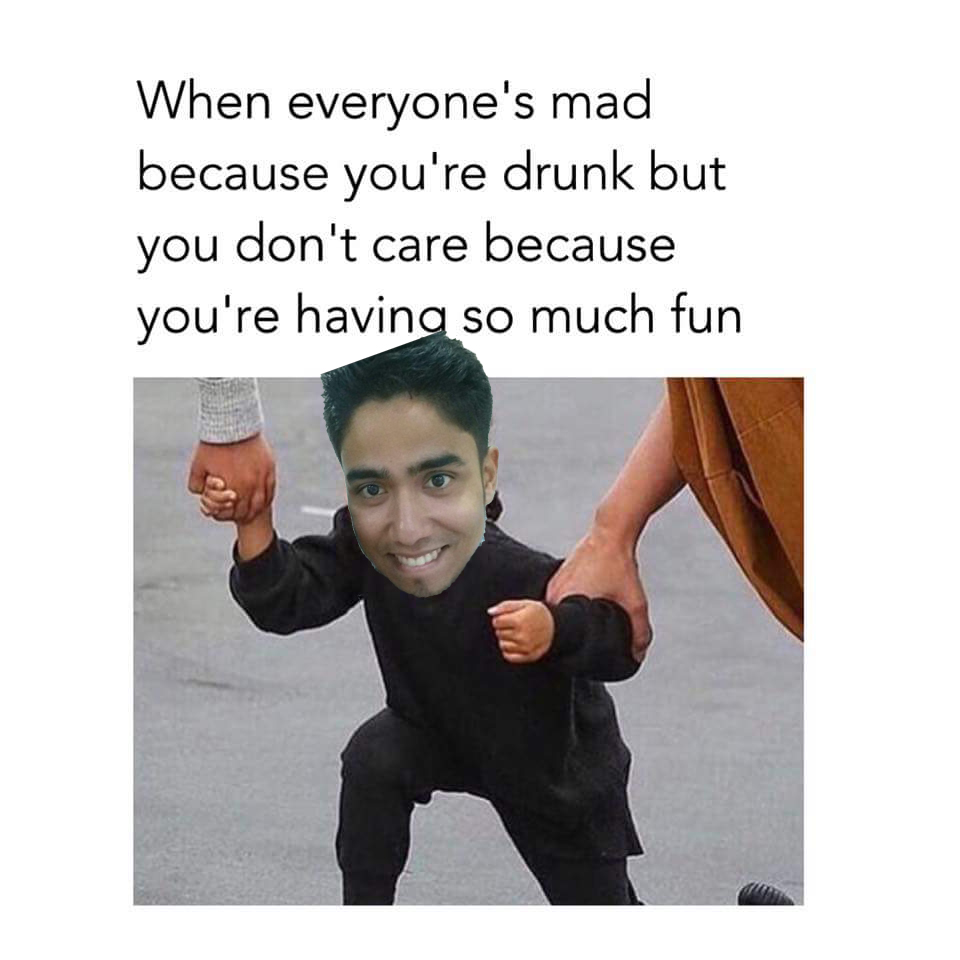

Mipoin
ocurrencias
Enciendeme el sol con tu mirada
y encierra tu sonrisa entre mis labios.
Como la brisa de mayo despertaste mi ánima
De un largo y profundo rato con morfeo.
y asi se fue ella sin la mas minima intencion
de entender y tan solo habria bastado
con un sentimiento tan primitivo y simple
como el amor.
Inspiré sufrimiento y exhalé perdon al mundo.
Todas las cosas mueren y tu siempre estas
ahi para recordarme que hasta los dias conocen el fin.
It doesn't matter about what happened
yesterday, it doesn't matter about what
happened to you, what matters is...
what you going to do about it.
The real challenge of growth mentally,
emotionally and spiritually comes
when you get knocked down, it takes
courage to act, part of being hungry
when you get defeated, it takes courage
to start over again.